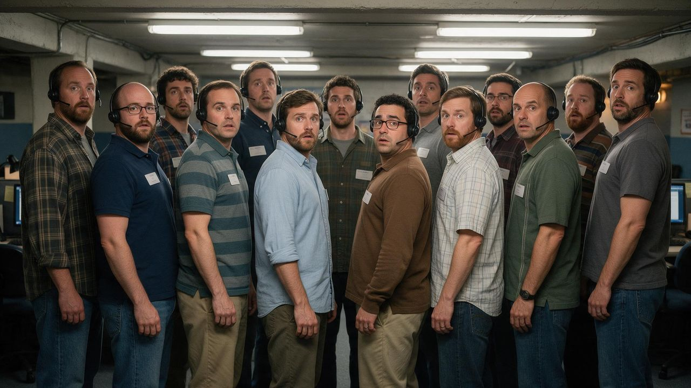

Scams ·
“Steve From Microsoft” Asks Supervisor, Also Named Steve, for Help
The call center has 14 employees. All of them are named Steve. Productivity has collapsed, the printer is also named Steve, and none of them work at Microsoft.

Satire, Obviously. Chaotic News is satire. Some stories start from real news, but every joke is made up. Do not forward this to your aunt as fact.
SOMEWHERE ONLINE (CN) — A routine scam call came to a complete stop Saturday when “Steve from Microsoft” put a customer on hold to ask his supervisor for help, and discovered that his supervisor was also named Steve.
So was the supervisor’s supervisor. So was the guy who refills the printer. So, according to a sticker on the side, was the printer.
“I said, ‘Steve, I need help with a customer,’” the first Steve told Chaotic News Network. “And fourteen people stood up. Then the printer made a noise.”
A Workplace of Steves
The call center operates out of a basement registered to Bulgeet & Bibi Enterprises, LLC, and employs 14 people. Every one of them introduces himself as “Steve from Microsoft.” None of them work at Microsoft. One of them has never seen a computer turned on and believes the screen is “a sticker.”
“It started as a marketing decision,” explained CEO Bulgeet, whose own work name is also Steve. “Steve is a very trustworthy name. Nobody has ever been scammed by a Steve. Please do not look that up.”
Problems began almost immediately. Staff meetings now take three hours, mostly spent figuring out who is talking. The Employee of the Month plaque simply reads “Steve,” and all 14 employees have claimed it, including one who started that morning. The office group chat is called “Steves” and every message in it reads “who said that.”
Birthday cakes, sources say, are “a nightmare.” The office celebrated Steve’s birthday 14 times in March. Nobody knows which one was real. All of them had cake.
The Call That Broke Everything
The crisis came to a head when a customer refused to buy a $500 gift card “for the firewall.”
“This never happens,” said the first Steve. “I said, ‘Sir, your firewall is expired.’ He said, ‘I don’t have a firewall.’ I said, ‘That is why it is expired.’ He said no. Nobody says no. I did not have training for no. The training is just the word ‘yes’ on a poster.”
He placed the customer on hold. The hold music, a 6-second clip of a fax machine, began to loop.
According to call logs obtained by CN, the first Steve was then transferred:
- From Supervisor Steve to Steve from the Firewall Department
- From Firewall Steve to Steve from Billing
- From Billing Steve to Steve from Virus Removal
- From Virus Removal Steve back to himself
“I answered and said ‘Steve from Microsoft, how can I help you,’” he said. “And I said, ‘Steve, it’s me, Steve.’ And I said, ‘Which Steve?’ I was on the phone with myself for eleven minutes. I was not helpful.”
By the time he returned to the call, the customer had hung up, reported the number, blocked it, and gone to lunch.
“You can’t fire anyone, because you might fire yourself.”
Experts Weigh In
Workplace psychologist Dr. Imogen Payroll of the Institute of Too Many Steves called the situation “a textbook case of name collision.”
“When every person in an organization has the same name, accountability disappears,” she said. “Who forgot to pay the electric bill? Steve. Who set the firewall on fire? Steve. Who is responsible for the fire? Also Steve. You can’t fire anyone, because you might fire yourself. Honestly, it’s the most efficient way to avoid blame I have ever seen. It just doesn’t do anything else.”
Next Steps
Bulgeet says the company will give one employee a new name to “break the tie.”
“We will call him Kevin from Apple,” he said. “Kevin will be the supervisor of all the Steves.”
The plan collapsed within the hour, when all 14 Steves applied to be Kevin.
When asked whether Kevin would actually work at Apple, Bulgeet put our reporter on hold. CN has now been on hold for 3 days, 6 hours and 41 minutes. The fax machine music is still playing. Our reporter says that around hour 30 it “started to slap.”
Chaotic News Network will update this story if anyone named Steve picks up.